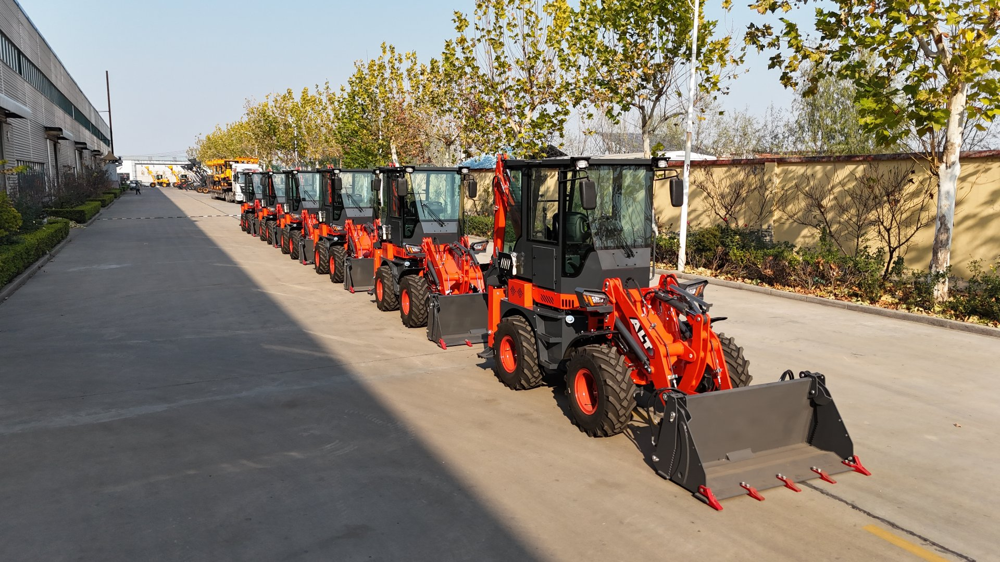
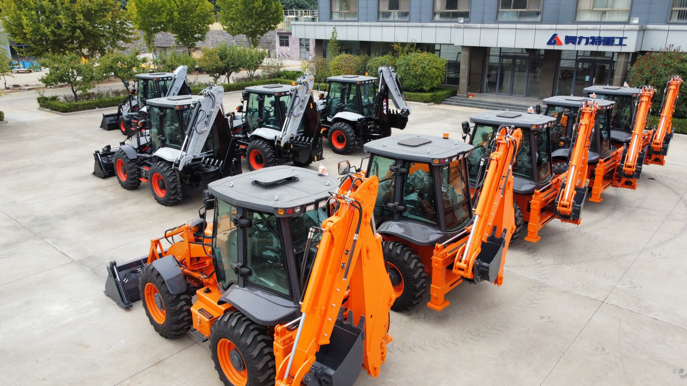
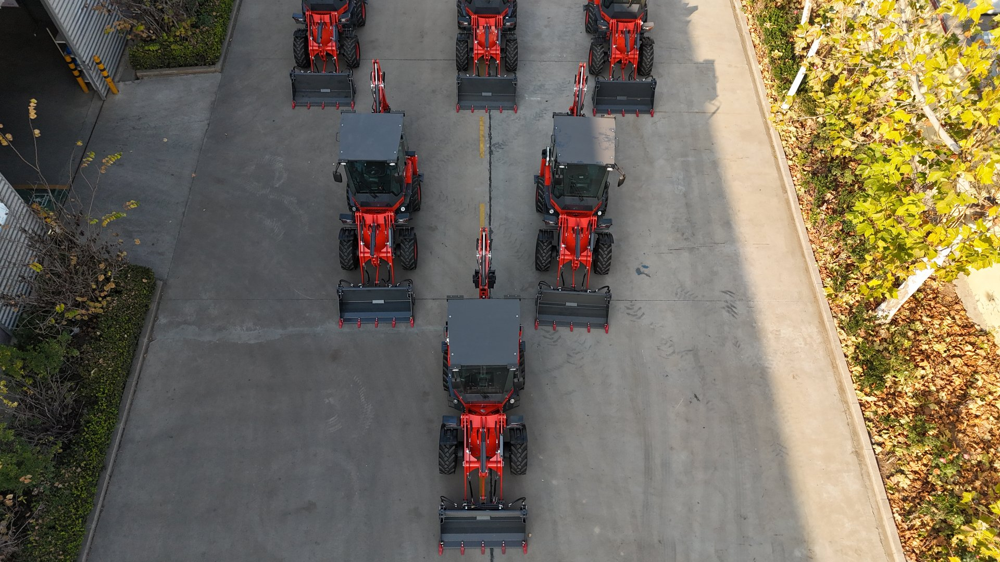

Earlier this year, a contractor in the Philippines sent me his rental receipts. Two dry seasons of renting a backhoe loader for drainage work, plus one wet-season emergency hire when a flood cut his access road. Nineteen separate rentals in eighteen months.
He asked me one question: "Vivian, did I just pay for a machine I don't own?"
That conversation inspired this article. I work on the assembly floor at AOLITE Heavy Industry every day, and I see both kinds of buyers: those who rent forever and never build anything, and those who buy and change the economics of their business. The difference between them is rarely about money — it's about whether anyone ever showed them the honest math.
So here it is. The real cost of renting, the real cost of owning, and the decision framework I walk every client through before they spend a dollar.

The Rental Rate Is Never the Real Cost
When people compare renting versus buying, they usually compare two numbers: the daily rental rate versus the machine price. That comparison is wrong from the start, because the rental rate is only the most visible part of what renting actually costs you.
Here is what rental invoices actually add up to:
- The day rate itself — the number everyone quotes.
- Mobilization and demobilization — getting the machine to your site and back. In rural regions this can rival several days of the rental rate itself.
- Minimum rental periods — many rental companies won't release a machine for less than a week, even if your job takes a day and a half.
- Waiting time — rental fleets get booked in season. If your trench must be dug in March and the machine is committed until April, your project slips. Delayed projects have their own costs.
- Clock-watching — the operator leaves when the paid hours end, whether the trench is finished or not. Half-finished jobs that must be re-booked are one of the biggest hidden expenses my clients describe.
- No access between projects — the small tasks that would take an owner 20 minutes (clearing a blocked culvert, backfilling a gate post, leveling a patch of road) simply never get done, because renting a machine for them makes no sense.
That last point is the one buyers most often miss. Renting doesn't just cost money — it changes your behavior. You stop doing small maintenance work because the economics of renting for 20 minutes don't exist. The farm slowly degrades. The access roads slowly worsen. The drainage gets cleared once a year instead of whenever it needs it.
The daily rental rate is what you see. The project delays, the half-finished jobs, and the work you never start at all — that's what you actually pay.
The Full Cost of Owning — No Sugar-Coating
Now the other side. I sell machines for a living, and I'm still going to tell you ownership is not free. An honest comparison needs the complete ownership cost stack:
| Cost Layer | What It Includes |
|---|---|
| Purchase | Machine price + ocean freight + insurance + import duties + inland transport to your site |
| Operating | Fuel, filters, grease, tires, wear parts (bucket teeth, hoses) |
| Maintenance | Scheduled service, hydraulic oil changes, periodic component inspection |
| Operator | Salary or your own time |
| Capital | The opportunity cost of the money tied up in the machine |
If you only count the purchase price, ownership looks instantly attractive. If you count every layer, it's a real commitment. I maintain a separate guide on backhoe loader maintenance costs and schedules so buyers can see the operating side in detail before deciding.
But here's the point most comparisons miss: the ownership cost stack is front-loaded and declining, while the rental cost stack is endless and compounding. Your heaviest ownership year is year one. By year four, you're buying filters and fuel. By year seven, the machine is long paid for and still working. Renting, meanwhile, costs exactly the same in year seven as in year one — and usually more, because rates rise.
The Decision Line: How Much Work Justifies Owning?
There is no single hour count that works in every country, because rental rates and duty regimes differ wildly. But there is a calculation method that works everywhere, and it's the one I use with clients:
- Add up your last two years of rental spending — every invoice, including mobilization, minimum periods, and re-hires for unfinished jobs.
- Add the value of work you didn't do because renting didn't make sense for it — estimate what the delayed drainage, unpatched roads, and skipped maintenance will eventually cost to fix.
- Compare that total to the delivered cost of a machine — factory price plus freight, duties, and inland transport to your site.
If two years of renting (plus the deferred work) approaches the delivered machine cost, ownership pays for itself in roughly two to three years. Everything after that is margin.
My rule of thumb: If your earthmoving work adds up to more than a few weeks of machine time per year — regular trenching, loading, road maintenance, farm work — the math almost always lands on ownership. If you genuinely have one short project and nothing after it, rent, finish the project, and save your capital.
How Different Buyers Land on the Answer
Farm owners
Farms almost always cross the ownership line. Irrigation, drainage, fencing, feed handling, pond cleaning — the work is recurring and seasonal, and rental availability never matches the season. A compact model like the BL 20-07 diesel mini covers most farm tasks at the lowest purchase and transport cost.
Small contractors
If digging and loading are your revenue, renting a machine is renting your own production capacity. Contractors who own can quote jobs faster, take small jobs rental economics can't touch, and control their schedule. Contractors who rent forever pass their margin to the rental company.
Municipalities and utilities
Water line repair and cable trenching cannot wait for a rental fleet's availability. A service interruption has political and public costs far beyond the rental rate. Most municipal buyers I work with justify ownership on response time alone — the money is secondary.
Property developers
This is the one group where renting often wins. If your development is a bounded project with a defined end — one site, one build-out — and you have no recurring work after completion, rent for the project duration and exit cleanly.

How Buying From the Factory Changes the Equation
Here's the part of the rent-versus-buy math that most comparisons — written in Europe or North America — leave out entirely.
Rental fleets price their day rates against the local retail cost of machines. In many of my clients' markets, that retail price carries importer margins, dealer markups, and local inventory financing costs stacked on top of the factory price. The rental rate you pay is built on that inflated base.
When you buy factory-direct from China, your cost base is different: the ex-works machine price, ocean freight, insurance, your country's import duty, and inland transport. For most destinations in Africa, Southeast Asia, the Middle East, and South America, that landed cost lands meaningfully below local retail — which means the payback period on ownership shrinks accordingly.
In other words: the rent-versus-buy line moves. Work that wouldn't justify ownership at local retail prices can comfortably justify it at factory-direct landed cost. That's why I tell clients to get a landed-cost estimate for their specific country before making the decision — assumptions imported from US or European articles simply don't apply. I've written a full guide on backhoe loader prices from China and another on the machinery import process to make this step easier.

Three Factors Rental Math Never Counts
1. Resale value
A backhoe loader is an asset, not an expense. Well-maintained machines hold value for years — a buyer who purchases today and sells in eight years recovers a meaningful share of the original cost. Renting builds zero asset value. If you're weighing new against used machines as well, I have a separate guide on used vs new backhoe loaders.
2. The machine can earn when you're not using it
This is the factor my rural clients exploit best. An owner in Kenya or Bolivia doesn't just use the machine — the machine works for neighbors: paid trenching, fence post drilling, drainage clearing. Your machine works your jobs first, then earns on idle days. Rental companies exist precisely because this demand is constant; an individual owner can capture part of it. No rent-versus-buy spreadsheet I've ever seen includes this line.
3. Know-how compounds
An owned machine trains your operator. Hours accumulate, skill accumulates, and small maintenance knowledge accumulates. Two years of ownership leaves you with an operator who can diagnose a hydraulic issue in the field. Two years of renting leaves you with a stack of invoices.

My Pre-Decision Checklist
Before you decide either way, run through these five questions. This is the same list I use with clients before preparing any quotation:
- How many weeks of machine time per year does your work actually require? Be honest — include the small jobs you've been skipping.
- What did you spend on rentals over the last two years? Pull the invoices, not the memory.
- What is the delivered cost of a machine in your country? Factory price + freight + duty + inland transport. Ask for a landed-cost estimate — I provide these routinely.
- Could the machine earn on idle days? Is there paid work available in your area — neighbors, municipalities, small contractors?
- Do you have (or can you train) an operator? Ownership works best when one person knows the machine well.
If questions 1 and 2 surprise you with how big they are, and question 3 comes back reasonable, you already know the answer.
The Bottom Line
Rent for one bounded project. Buy for a business, a farm, or a municipality. And run the math with your real numbers — your actual rental invoices, your actual delivered machine cost — not with rules imported from markets where machines cost twice as much.
Where the usage is recurring, ownership wins. Where the delivered cost is factory-direct, ownership wins sooner. And where the machine can earn on its idle days, ownership stops being a cost decision and becomes a business decision.
If you want to see the delivered cost for your country — machine, freight, duty, inland transport — tell me your region and the model you're considering, and I'll walk you through the numbers from the factory floor.
Want the real numbers for your country?
Tell me your region, your typical annual workload, and the machine you're considering. I'll give you a landed-cost estimate and an honest read on whether renting longer actually makes sense for you.
Run the numbers with me